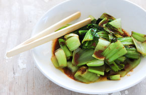

Japanese Vegetarian
Five week courses in London
A five week intro to traditional Japanese Vegeterian meals, teaching ou a selection of rice and noodle dishes.

A five week intro to traditional Japanese Vegeterian meals, teaching ou a selection of rice and noodle dishes.

An intense one-day course looking at how to create the most delicious Sauces for use in range of Japanese cookery.